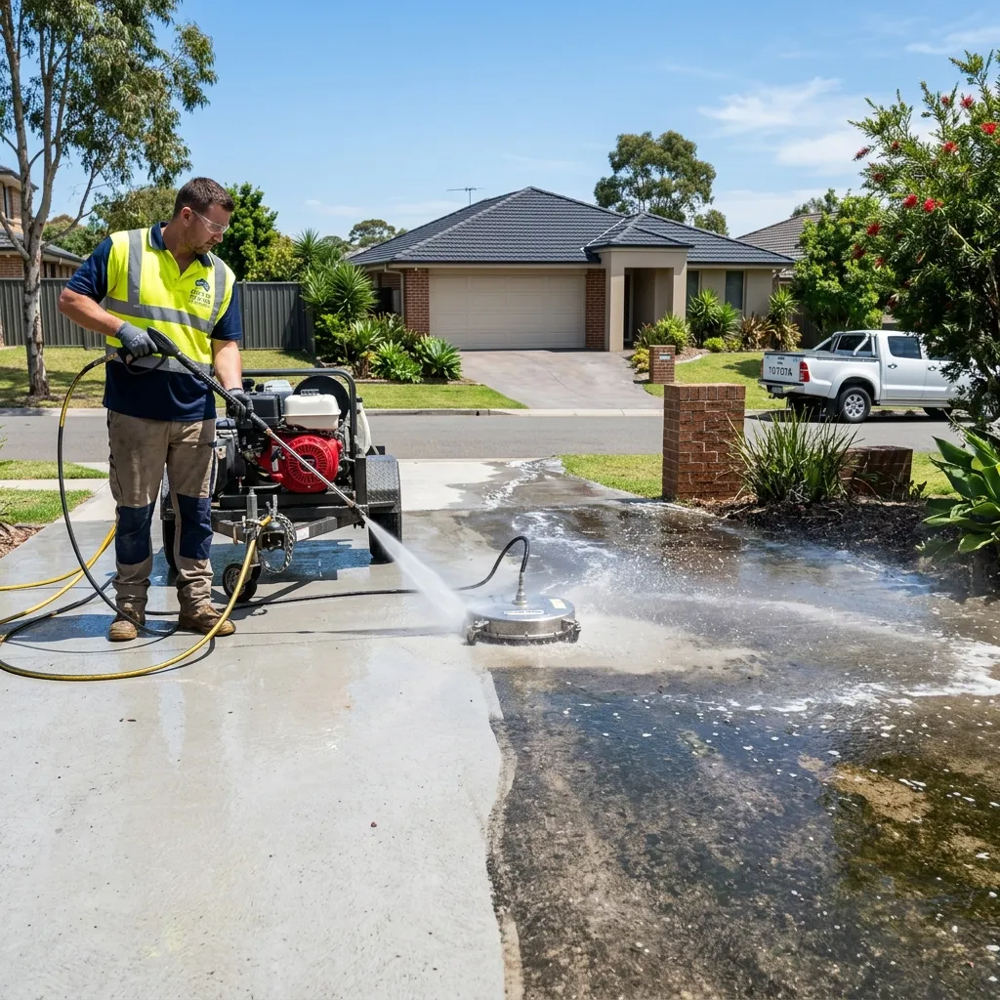
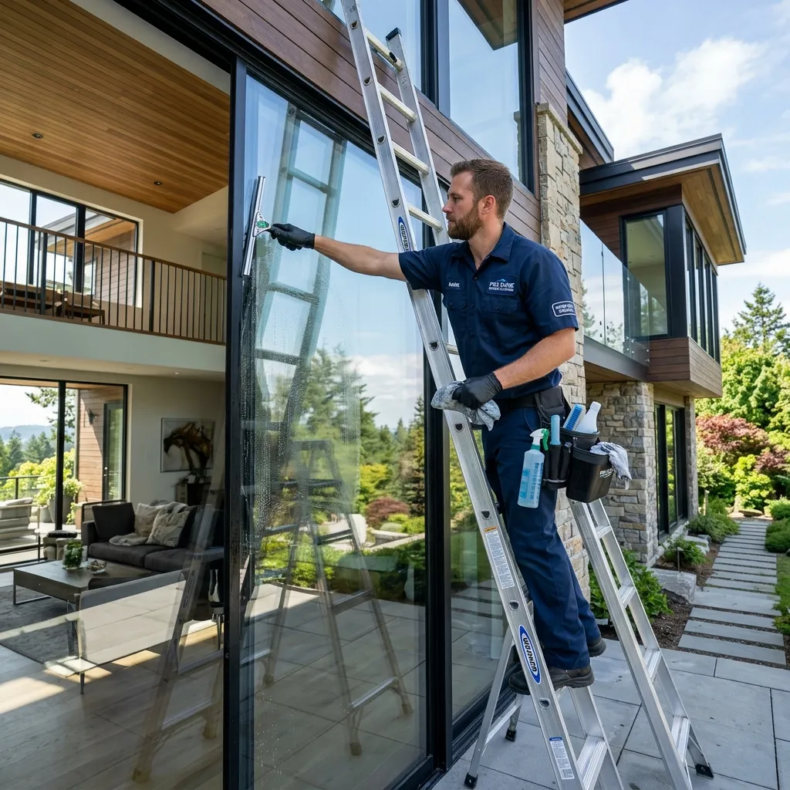
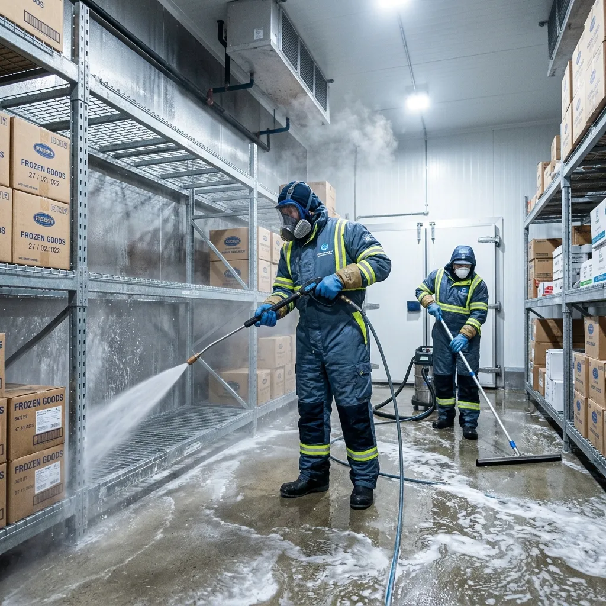
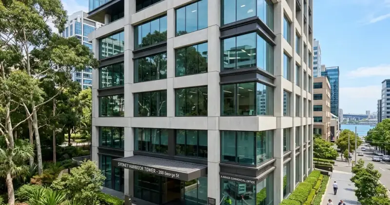

Exterior House
Washing Adelaide
Safe, effective soft-wash and pressure-wash techniques to restore your home's exterior. We clean render, brick, weatherboard, cladding and more — without risk of damage.
Your Home's Exterior,
Restored to Its Best
Over time, your home's exterior collects mould, algae, lichen, dust and grime — dulling its appearance and potentially causing long-term damage to paint, render and cladding. A professional wash makes an immediate and dramatic difference.
At AquaVL, we select the right cleaning method for every surface. We use low-pressure soft-wash systems for delicate render and painted surfaces, and controlled higher-pressure washing for brick, tiles and concrete areas. Every job is approached with care and precision to protect your home's value and appearance.
Book a Free QuoteSurface Safe
Right technique matched to every surface type and coating.
Mould Treatment
Targeted solutions that kill mould and algae at the root.
2–5 Hours
Most residential homes completed in a single visit.
Pro Equipment
Commercial soft-wash rigs and pressure washers on every job.
Fully Insured
Public liability insurance on every job.
Free Quotes
No obligation estimates, usually same day.
How It Works
A methodical approach that protects your home while delivering exceptional results.
Free Quote & Surface Assessment
We assess your home's exterior — surface types, level of soiling, mould presence and any areas requiring special care — and provide a no-obligation quote with recommended method.
Pre-Treatment Application
Where mould, algae or lichen is present, we apply a targeted biocide treatment. This breaks down organic growth before washing begins, delivering a far deeper and longer-lasting result.
Soft-Wash or Pressure Wash
We apply the appropriate cleaning method for each surface. Render, painted walls and cladding receive a gentle low-pressure soft-wash. Brick, concrete and tiles are cleaned with higher pressure where safe.
Detail & Edge Clean
We clean fascias, gutters, sills, downpipes and eaves to ensure the entire exterior is uniform and complete — not just the main walls.
Final Inspection & Photo Report
We complete a final walkthrough and send before-and-after photos so you can see the transformation — whether you were home or not.
We Clean Every Exterior
Different surfaces need different approaches. We know them all.
Render & Texture Coat
Soft-wash method preserves the render while removing mould, staining and years of discolouration gently and effectively.
Brick
Brick exteriors respond well to controlled pressure washing, restoring their natural colour and removing efflorescence and grime.
Weatherboard & Cladding
Low-pressure soft-wash cleans painted weatherboard and modern cladding without lifting paint or forcing water behind panels.
Eaves, Fascias & Gutters
Often overlooked, these areas accumulate significant grime and mould. We include them as standard for a truly complete exterior clean.
Common Questions
Everything you need to know about our exterior house washing service.
Not all surfaces suit high pressure. We assess your home's exterior and choose the right method — soft-wash for render and painted surfaces, higher pressure for brick and concrete. This protects your home while achieving the best result.
Yes. We use targeted treatments that kill mould, algae and lichen at the root rather than just washing them away. This gives a deeper clean and helps prevent rapid regrowth.
Most residential homes take between 2 to 5 hours depending on size, number of storeys and level of soiling. We'll give you a time estimate with your quote.
No. As long as we have access to the exterior of your home and a water source, we can complete the job while you're out. We'll send before and after photos upon completion.
We recommend a professional exterior wash every 12 to 24 months in Adelaide's climate. Homes in areas with more trees, shade or coastal exposure may benefit from more frequent cleaning.
Explore Our Other Services
We offer a full range of exterior cleaning solutions for Adelaide properties.

Driveway Cleaning
High-pressure washing that restores your driveway to like-new condition.
Learn more
Window Cleaning
Streak-free, crystal-clear windows using pure water technology.
Learn more
Industrial Freezer Cleaning
Professional freezer room and cold storage cleaning for food facilities.
Learn more
Commercial Property Care
Full exterior maintenance packages for businesses & strata.
Learn moreReady for a Cleaner Home?
Contact AquaVL today for a free, no-obligation quote. We service all Adelaide suburbs.